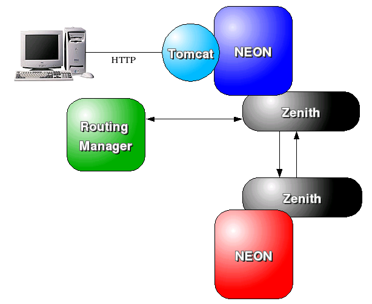

Neon is a framework for hosting objects. The objects are modeled as agents, that can be deployed directly into a Neon instance.
The architecture
Neon is essentially a grid system, allowing multiple components spread across the network to knit together to provide your application. Neon provides partitions which allow separation of object sets for deployment or management purposes. Each instance of Neon can contain multiple partitions, but each one must have a unique name; all partitions with the same name across all instances of Neon on the same Jini group, are collectively called a Domain. Although a partition is restricted to a single host, the terms Domain and Partition are roughly equivalent, and where explanation applies only to one, indication will be shown where necessary.

Fig
1) Relationship between instances, domains and partitions
In order, to deploy your objects into Neon, you must model first-tier objects as agents. A First-tier object, is the core object that is exposed to both Neon and other agents; as such Neon provides a set of interfaces and abstract classes to help you build agents. As part of these interfaces, Neon provides the means to allow your components to interact with each other and for one component to expose the functionality it will allow other agents to use; this is termed Collaboration. Collaboration between components can occur not only between agents in the same Partition (i.e. the same host) , but also between agents in various Partitions across the Domain, and even between agent on different hosts in different Domains. To support this, Neon uses a messaging system called Zenith; this provides all the required routing capabilities, and provides numerous messaging components to manage interactions between endpoints on the messaging system; in Neon's case these will be agent endpoints, but you can add other endpoints into Zenith, and call them from your agents.
Neon also provides support for transactions and all agents are capable of carrying a transaction, and with the appropriate interface support an agent can also react to 2PC or be able to access the Jini transaction in order to send on to another Jini service. Transactions are also automatically propagated across partitions and domains.
Internal Tomcat integration is also available within Neon, and should not interfere with any existing webapps that you have deployed. An instance can be configured to automatically start Tomcat within the instance VM, and provide access to the Neon core. This allows you to obtain agents and interact with them, and provide a web front end to your grid application. Also, agents can provide a presentable format of their data when requested, which can then be rendered via a RenderAgent; this could render your data as XML, HTML, raw text, or if you had the required software PDF, so building autonomous agents that can generate reports is very easy.

Fig
2) Tomcat Integration and Inter-node communication